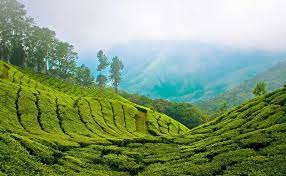

It’s set in an area of granite cliffs, forested valleys, lakes, waterfalls and grassy hills.
At 2,000 meters above sea level, the town centers around man-made, star-shaped Kodaikanal Lake, bordered by evergreen forest.

Munnar is a town in the Western Ghats mountain range in India’s Kerala state.
A hill station and former resort for the British Raj elite, it's surrounded by rolling hills dotted with tea plantations established in the late 19th century.

Kodaikanal is a hill town in the southern Indian state of Tamil Nadu.
It’s set in an area of granite cliffs, forested valleys, lakes, waterfalls and grassy hills.
At 2,000 meters above sea level, the town centers around man-made, star-shaped Kodaikanal Lake, bordered by evergreen forest.
Ponmudi is a hill station in the Peringamala gramapanchayath of Trivandrum District of Kerala in India.
Flowing through a wilderness area, it has rounded pebbles, cool water, fish, and lush green trees. Some notable tourist attractions located in Ponmudi are Peppara Wildlife Sanctuary, Echo Point and various trekking spots.
Mist-laden valleys, especially Golden Valley near Kallar River, also draw tourists.
Ponmudi is the ultimate destination for all those who wish to experience nature at its best.
Situated 1100 metres above sea level, you are bound to enjoy a fascinating view of the water body surrounding the hill.
There are 22 hairpin bends en route the hill station.